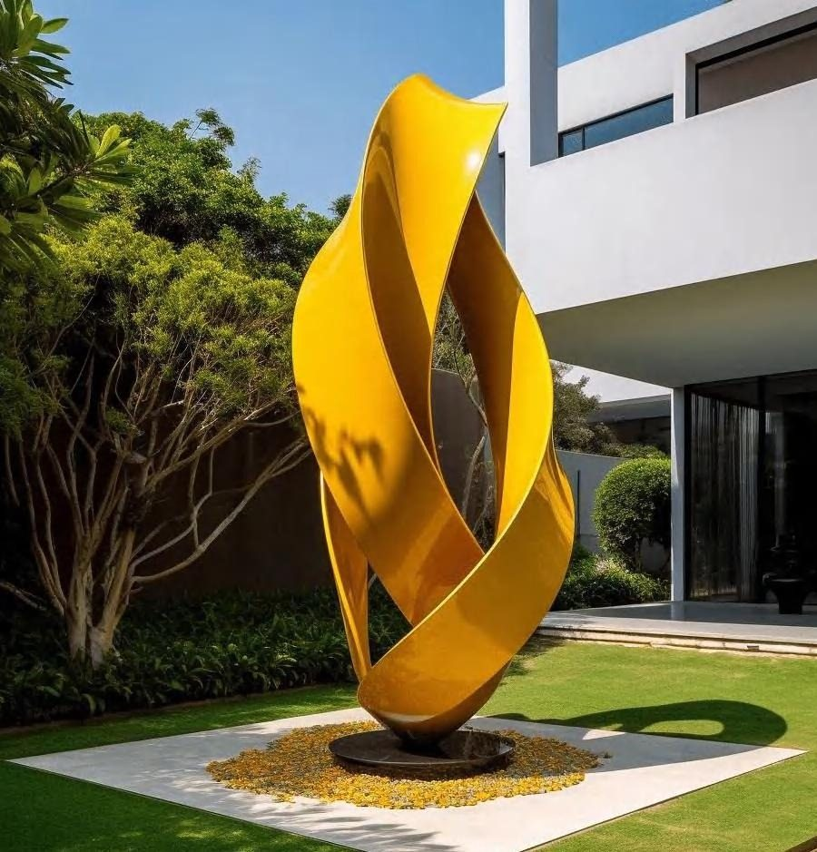

The Journal
On light, form
and the art of arrival.
Essays from the atelier on bespoke chandeliers, architectural ceilings, monumental sculpture and the craft of transforming architecture into emotion.
Essays from the atelier on bespoke chandeliers, architectural ceilings, monumental sculpture and the craft of transforming architecture into emotion.

A chandelier is no longer a fixture. In the hands of a couture atelier it becomes the emotional centre of a room — drawn to its architecture, engineered to its light.
Read the piece →We spend our lives beneath ceilings and rarely look at them. That is exactly why a designed ceiling is so powerful — it works on people before they know why.
Read the piece →
When a sculpture is built to the scale of a building, it stops being decoration and becomes a landmark — the first thing a place is remembered by.
Read the piece →
In hospitality, light is the first welcome and the last impression — and the most strategic design decision a property will ever make.
Read the piece →
Luxury is not a price. It is a depth of material and finish the eye reads instantly — and the hand confirms on touch.
Read the piece →
From the first conversation to the final installation, a commission is a single unbroken line of authorship. Here is how a piece comes to life.
Read the piece →